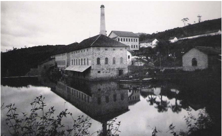

População 2010(IBGE)
24 777 habitantes

Serpa
24 777 habitantes
27,68 km²
894,84 hab/km²
Vila Miraval
Vila Gertrudes
Jardim Marcelino
Jardim dos Eucaliptos
Jardim Vitória
O bairro do Serpa é o que mais possui linhas de ônibus. As linhas do Serpa são:
030 - Jardim Eucaliptos
040 - Vila Miraval
050/050A - Jardim Vitória
055 - Jardim marcelino


O bairro Serpa tem a história que anda diretamente junto à história de Caieiras.
A história da cidade começa no século XIX, quando o Cel. Antônio Proost Rodovalho compra uma fazenda ao longo do Rio Juqueri-Guaçu, nas proximidades de onde, posteriormente, formou-se a cidade.
O Coronel, que era conhecido por seu empreendedorismo, manda construir dois fornos, que passam a produzir cal (chamados de caieiras), que era transportada no lombo de mulas até a estação ferroviária de Perus, para depois ser enviada para São Paulo e ao Porto de Santos. E dessas caieiras surgiu o nome da cidade.


Em 19 de julho de 1883 foi inaugurada a estação ferroviária de Caieiras, pela São Paulo Railway Company, atendendo a uma solicitação do Coronel Rodovalho e de seus sócios britânicos. Com a ferrovia, a região começou a se desenvolver.
Por volta de 1877 o Coronel decidiu investir num novo ramo: a fabricação de papel industrial. O projeto de instalação da indústria foi encomendado por ele à empresa alemã Gebruder Hemmer Neidenburg Pfalz.
Dez anos depois, a fábrica de papel começa a ser construída e, em 1890, a Companhia Melhoramentos de São Paulo - Industria de Papéis entra em funcionamento. No dia 4 de abril, uma das máquinas produz papel pela primeira vez.
Ainda nesse ano, Rodovalho e sua esposa, Etelvina Dutra Rodrigues Rodovalho, adquirem a Companhia, intensificando ainda mais a produção de papel. Para solucionar o problema de falta de energia, a Melhoramentos começa a plantar eucaliptos para utilizar como lenha para os fornos. Daí nasceu o apelido de Caieiras: "Cidade dos Pinheirais".
A vida política começou a tomar forma apenas em 1953, quando os moradores da região passaram a organizar a Comissão Pró-Emancipação, cujo objetivo era criar o Município de Caieiras. Assim, foi enviado à Assembleia Legislativa uma solicitação para a realização de um plebiscito que decidiria sobre a criação do município.
Depois da realização do plebiscito, cuja escolha do povo foi pela emancipação, em 14 de Dezembro de 1958, surge oficialmente o município de Caieiras.
O bairro do Serpa surgiu com a ocupação das áreas relativas ao bairro pelos trabalhadores da companhia Melhoramentos e dos fornos de cal. Consequentemente, grande parte das famílias tradicionais do bairro derivam de trabalhadores. Algumas famílias tradicionais que podemos citar é a Spera, uma das mais tradicionais do bairro e a Casarotto, uma das primeiras a popular a cidade.
Área equivalente à fábrica Melhoramentos
Área do bairro Serpa
Fontes: https://caieiras.sp.gov.br/?id=turismo&apelido=historia
https://www.caieiraspress.com.br/historia.php?acao=verMateria&id=752
https://www.caieiraspress.com.br/historia.php?acao=verMateria&id=753